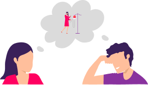
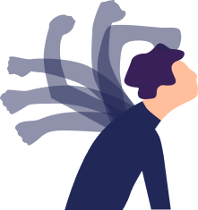
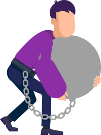
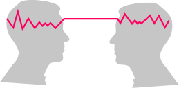
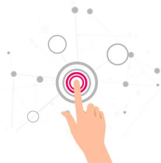

Принцип синхронности —
это очень простой принцип, но при этом довольно сложный для понимания.
Суть этого принципа состоит в том, что мы влияем на других людей прямо сейчас,
даже когда ничего не прорабатываем.
Важно осознать этот принцип,
особенно когда ты начинаешь прорабатывать что-то, касающееся нормы или результатов других людей.
Другой человек тоже есть в моей реальности.
И его результаты — это те результаты, которые я подсознательно хочу, чтобы у него были.
Поэтому если люди вокруг вас какие-то больные, им плохо, они не развиваются и находятся в состоянии жертвы, то, следуя логике
«Аксиомы 1−1», вы сами этого хотели.
Вам можно было этого хотеть, и здесь ни в коем случае не нужно винить себя за это.
Да, здесь бывает сложно не винить себя, и тем не менее это важно.
Вспоминаем о том, что чувство вины — это главный враг.
Вам можно было этого хотеть, и здесь ни в коем случае не нужно винить себя за это.
Можно легко понять на примере, как работает принцип синхронности. Представим, что есть человек, который обиделся, и есть человек, который его обидел.
И у каждого из них есть свои подсознательные причины на эту ситуацию. У одного есть причины обижаться, у другого есть подсознательная причина обидеть.
Допустим, первый человек хотел, чтобы его обидели, и потом кто-то его пожалел.
И через это он хотел ощутить любовь и внимание своих близких.
А тот, кто хотел обидеть, только так мог испытать ощущение своей силы, только через обиду другого человека.
Это просто пример, здесь может быть миллион причин.
И принцип синхронности заключается в том, что эти люди всегда найдут друг друга.
Не бывает так, чтобы кто-то меня обидел, а у меня не было для этого подсознательных причин, или у него не было подсознательных причин, или только мои подсознательные причины им управляли, как марионеткой.
С одной стороны, мы управляем людьми всегда, потому что независимо от того, прорабатываемся мы или нет, есть у нас Master Kit или нет, у нас всегда есть определенные установки относительно определенных людей, и мы управляем другими людьми.
Но мы делаем это неконтролируемо.
Мы не понимаем, что мы хотим от этих людей. Они часто не понимают, чего хотят от нас. И у того и у другого человека может возникать вопрос:
«Почему ты ведешь себя так?».
И самое интересное, что мы начинаем обвинять другого человека. Это бесполезно, потому что обвинение никогда не приводит ни к чему прекрасному. Человек просто уходит в сопротивление, потому что это задевает его самооценку.
Он тоже начинает себя винить. Возникает порочный круг обвинения.
Другой вариант.
Когда нам не нравится поведение человека или его результаты, мы начинаем смотреть свои подсознательные причины:
почему для меня важно, чтобы он так выглядел, так себя вел, имел такие результаты.
Но здесь, пожалуйста, не начинайте жить жизнью других людей. Вам необходимо прожить этот опыт и научиться прорабатывать результаты других людей через себя, для того чтобы вы знали, как это делается.
Возможно, вы уже прорабатывали что-то через себя относительно других людей.
Допустим, у вашего ребенка была высокая температура, болели зубы или было более серьезное заболевание, и вы прорабатывали его, находя свои причины. Когда вы убирали свои причины, у ребенка резко пропадала температура или снимался диагноз. :
И вы подсознательно хотели, чтобы он болел, поэтому сказать, что вы не влияли на него в этот момент, конечно, нельзя.
Вопрос лишь в том, что мы начинаем контролировать, как именно нам влиять. Но не влиять на близкого человека и даже, в принципе, на далекого — таких вариантов у нас нет.
Мы не можем не влиять.
Единственный вариант не влиять — это полностью отрезать себя от социального мира, ни с кем не общаться и не взаимодействовать, ни о чем не знать и не узнавать, жить в лесу. Это единственный вариант не влиять на других людей.
Поэтому, друзья,
никогда не бойтесь влиять на других людей.
Не бойтесь прорабатывать свои установки относительно результатов других людей. Не уходите слишком в это, потому что самое главное —
это ваши результаты и философия здоровой клетки.
Показывайте своим примером, как можно проживать эту жизнь,
каких результатов можно достигать.
И это само по себе будет для людей отличным примером того, какие цели можно перед собой ставить и в какие игры можно играть в этом мире, что прекрасно и великолепно.
Обязательно попробуйте прямо сейчас проработать какой-то сознательный вопрос, касающийся и вас, и других людей. Это может быть какое-то проявление вашего партнера.
- муж подарил мне цветы мои партнеры в бизнесе
- максимально эффективно работают или сотрудники, кто
- угодно мой ребенок получает пятерки в школе
Что угодно проработайте, тем более если вы никогда не пробовали прорабатывать результаты других людей через
Master Kit.
Обязательно попробуйте.
Но, конечно, именно те результаты, которые важны для вас, которые вас волнуют.
Это очень эффективно.